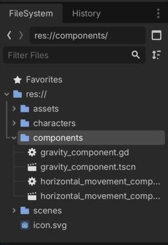
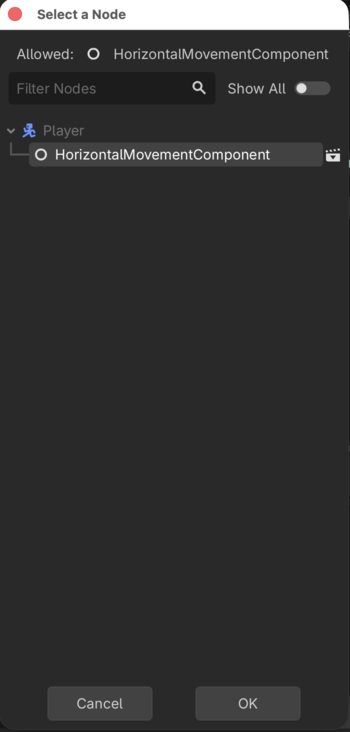
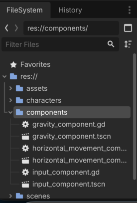

Godot 2D Platformer - level 6, videre med Player og komponenter
I level 5 fik vi lavet vores første
komponent, nemlig GravityComponent som sørger for at trække
en CharacterBody2D ned mod jorden.
I den her level vil vi fortsætte arbejdet med vores
Player og lave to komponenter så vi kan begynde at flytte
vores Player.
Lad os komme i gang.
Lad os tænke os om!
Hvad er det vi gerne vil?
Vi vil gerne have at når vi trykker på de taster vi nu har defineret styrer vores player, så skal vores figur flytte sig på skærmen.
Så kunne man jo umiddelbart godt tænke at vi skulle lave en komponent der kunne:
- lytte efter tastetryk
- baseret på hvilke tastetryk der er registreret, flytte spillerens
CharacterBody2D
Men...vi vil jo også gerne kunne genbruge de her komponenter. I det
her tilfælde vil vi gerne kunne genbruge dem til vores
Walkers CharacterBody2D så den også
kan flytte sig ved hjælp af vores komponent.
Men...vi styrer jo ikke en Walker med tastaturet, så det
dur jo ikke at komponenten lytter efter tastetryk og så flytter
CharacterBody2D på baggrund af det.
Nej...vi bliver vist nødt til at splitte det op.
To komponenter
I stedet vil vi gerne lave to komponenter:
- en
HorizontalMovementComponentsom vi kan bruge til at bevæge os horisontalt (altså vandret, hen af en platform) - en
InputComponentsom vi kan bede om at få en retning som spilleren bevæger sig i
Og så kan vi bruge InputComponent til at finde ud af om
spilleren har trykket på tastaturet, og hvis de har, så kan vi sige til
vores HorizontalMovementComponent: Flyt
CharacterBody2D i den her retning tak.
Og når vi så skal til at lave vores Walker kan vi stadig
bruge HorizontalMovementComponent og så give den en retning
som vi selv styrer.
Det bliver godt!
HorizontalMovementComponent
OK så vi er blevet enige om at vi vil lave en komponent som vi:
- giver en
CharacterBody2Dog en retning som input parametre - ud fra det finder vores komponent så ud af at opdatere
CharacterBody2Ds x værdi
Lad os lige tænke lidt mere over hvordan vi flytter vores
CharacterBody2D.
I level 5 gjorde vi sådan her i vores
GravityComponent for at opdatere y værdien og dermed flytte
os lodret:
body.velocity.y += gravityVi må kunne gøre det samme med x værdien hvis vi vil flytte os vandret.
Altså
body.velocity.x = hvad??Ja hvad skal x værdien så være?
Først og fremmest skal den vel være:
- et negativt tal for at vi kan bevæge os til venstre
- et positivt tal for at vi kan bevæge os til højre
- 0 hvis vi vil stå stille
Heldigvist lærte vi jo allerede da vi lavede vores 2D space shooter at når vi spørger Godot om input på en akse (x eller y), så kan vi få 3 værdier tilbage:
- -1 hvis man har trykket på "flyt til venstre" tasten
- +1 hvis man har trykket på "flyt til hæjre" tasten
- 0 hvis man ikke har trykket på nogle taster
Det er jo nemt, hvis vi bare sørger for at det er den værdi vi får
med ind som input parameter, så kan vi jo bruge den, lad os kalde
variablen for direction
Men så kan vi vel sige noget i retning af:
body.velocity.x = directionOg så vil vi bevæge os i den rigtige retning:
- hvis direction = -1 vil vi sige
body.velocity.x = -1 - hvis direction = 1 vil vi sige
body.velocity.x = 1 - hvis direction = 0 vil vi sige
body.velocity.x = 0
Meeeeeeen, hvad var det nu velocoty dækkede over? Vi kigger lige i dokumentationen igen:
Current velocity vector in pixels per second, used and modified during calls to move_and_slide().
OK så hvis vi siger:
body.velocity.x = directionSå vil vi flytte os med 1 pixel i sekundet! Det er vist ikke hurtigt
nok! Så vi er nok nødt til at have en speed konstant som vi
kan gange på.
@export var speed: float = 150
body.velocity.x = direction * speedMen vi er stadig ikke tilfredse!
Tænk på dig selv når du løber, eller går, eller cykler. Når du starter med at bevæge dig, er du så oppe i fuld fart i det første skridt? Hvis du holder for rødt på din cykel i et lyskryds og det skifter til grønt, er du så oppe på 20 kilometer i timen når du træder på pedalerne første gang?
Det kan godt være du er ung og hurtig men for os andre gamle tager det tid at komme op i fart, det er det der hedder accelleration.
Det samme kan vi lave i vores
HorizontalMovementComponent.
Hvis vi introducerer en accellerationshastighed kan vi bruge en smart
funktion i Godot, nemlig den der hedder move_toward.
Vi kigger - igen - i dokumentationen:
float move_toward(from: float, to: float, delta: float)
Moves from toward to by the delta amount. Will not go past to.
Hva??? hvad mener de?? Ja OK, det er måske nemmere at forstå hvis vi ser det med nogle tal:
move_toward(0, 10, 2)
Her er
- from = 0
- to = 10
- delta = 2
Så det betyder at vi bevæger os fra 0 mod 10 med 2.
Og det kan vi så udvide endnu mere.
Hvis vi nu introducerer en variabel kaldet
ground_acelleration_speed kan vi bruge den sådan her:
@export var speed: float = 150
@export var ground_acelleration_speed: float = 12.0
body.velocity.x = move_toward(body.velocity.x, direction * speed, ground_acelleration_speed)Altså:
body.velocity.x er lig med at vi bevøger os:
- fra den nuværende
body.velocity.x - mod direction * speed
- med ground_acelleration_speed
Og det vil vi så gøre indtil vi rammer vores tophastighed.
Et eksempel
- direction = 1, vi går altså mod højre
- ground_accelleration_speed = 10
- speed = 100
- body.velocity.x starter med at være 0
| gennemløb | body.velocity.x start | udregning | body.velocity.x slut |
|---|---|---|---|
| 1 | 0 | move_toward(0, 1 * 100, 10) | 10 |
| 2 | 10 | move_toward(10, 1 * 100, 10) | 20 |
| 3 | 20 | move_toward(20, 1 * 100, 10) | 30 |
Og så videre.
Det er godtnok en lineær accelleration, men det er godtnok til os.
Vi er vist klar
Vi er vist - endelig - ved at være klar til at skrive vores
HorizontalMovementComponent, så lad os starte med at få
skelettet på plads præcis som vi gjorde i vores
GravityComponent.
- I "components" mappen laver du en ny
Node2Dsom du omdøber tilHorizontalMovementComponent. - Gem din scene som
horizontal_movement_component.tscn - Tilføj et script til
HorizontalMovementComponentog gem det somhorizontal_movement_component.gd
Det skulle gerne se sådan her ud

Script
Og så til det sjove, scriptet.
Som vi nåede frem til ovenfor skal vi have lavet en funktion der:
Vi tar dem en af gangen
Skelet
Vi gir lige vores script et class_name så vi kan bruge
det i vores Player
class_name HorizontalMovementComponent
extends NodeFunktions signatur
Vi vil det her:
Så vi skriver:
class_name HorizontalMovementComponent
extends Node
func handle_horizontal_movement(body: CharacterBody2D, direction: float) -> void:
Det var skridt 1
Lav @export variabler
Vi skal bruge variabler til:
- speed
- accellerations hastighed
- decellerations hastighed
Det ser sådan her ud:
@export_subgroup("Settings")
@export var speed: float = 150
@export var ground_accelleration_speed = 6.0
@export var ground_decelleration_speed = 12.0Og hele vores script ser sådan her ud nu:
class_name HorizontalMovementComponent
extends Node
@export_subgroup("Settings")
@export var speed: float = 150
@export var ground_accelleration_speed = 6.0
@export var ground_decelleration_speed = 12.0
func handle_horizontal_movement(body: CharacterBody2D, direction: float) -> void:
Det var skridt 2
Skal vi accellerere eller decellerere
Altså...flytter vi os, så vi skal bevæge os op i fart, eller har spilleren sluppet tastaturet så vi skal bremse ned?
Vi kan kigge på direction.
- hvis den er forskellig fra 0 er vi i bevægelse
- hvis den er 0 er vi ved at stoppe
Det kan vi gøre sådan her
var horizontal_change_speed: float = 0.0
horizontal_change_speed = ground_accelleration_speed if direction != 0 else ground_decelleration_speedDet er jo næsten som at læse en sætning :)
Vores script ser nu sådan her ud:
class_name HorizontalMovementComponent
extends Node
@export_subgroup("Settings")
@export var speed: float = 150
@export var ground_accelleration_speed = 6.0
@export var ground_decelleration_speed = 12.0
func handle_horizontal_movement(body: CharacterBody2D, direction: float) -> void:
var horizontal_change_speed: float = 0.0
horizontal_change_speed = ground_accelleration_speed if direction != 0 else ground_decelleration_speedDet var step 3
Bruge move_toward
Sidste skridt er at proppe værdierne ind i
move_toward.
Vi vil altså gerne gå:
- fra body.velocity.x
- mod direction * speed
- med horizontal_change_speed
Så det gør vi:
body.velocity.x = move_toward(body.velocity.x, direction * speed, horizontal_change_speed)Vores - færdige - script ser nu sådan her ud:
class_name HorizontalMovementComponent
extends Node
@export_subgroup("Settings")
@export var speed: float = 150
@export var ground_accelleration_speed = 6.0
@export var ground_decelleration_speed = 12.0
func handle_horizontal_movement(body: CharacterBody2D, direction: float) -> void:
var horizontal_change_speed: float = 0.0
horizontal_change_speed = ground_accelleration_speed if direction != 0 else ground_decelleration_speed
body.velocity.x = move_toward(body.velocity.x, direction * speed, horizontal_change_speed)Og det var step 4
Tilføj
HorizontalMovementComponent til Player
[Præcis på samme måde som vi tilføjede GravityComponent
tilføjer vi nu HorizontalMovementComponent til vores
Player ved at:
- Tilføje en
@export var horizontal_movement_component: HorizontalMovementComponenttil voresPlayerscript - "Instantiate Child scene" og tilføje
horizontal_movement_component.tscnpå voresPlayer - Assigne
HorizontalMovementComponenttil "Horizontal Movement Component" i "Inspectoren" for vores "Player" ]

Hurtig test
Vi har jo godtnok ikke nogen måde at opsamle tastaturtryk på endnu,
men vi kan lave en hurtig test ved at tilføje
horizontal_movement_component.handle_horizontal_movement
til vores _physics_process og så bare sætter værdien til -1
f.eks.
func _physics_process(delta: float) -> void:
gravity_component.handle_gravity(self)
horizontal_movement_component.handle_horizontal_movement(self, 1)
move_and_slide()Prøv at kør dit spil nu. Din Player skulle nu gerne
glide mod venstre.
Fedt. Videre!
InputComponent
Vores InputComponent er simpel. I første omgang skal vi
bare vide om man har trykket på venstre/højre eller ej, og det vil vi så
gerne gemme.
Husk at alle Node2D har en _process
funktion, den kan vi lytte i og så bare gemme værdien så vi kan få fat i
den i vores Player (eller hvor vi nu vil bruge dem).
Skelet
Samme som før.
- Lav en ny Node2D
- Kald den "InputComponent"
- Gem dem som
input_component.tscnunder "components" - Tilføj et script til "InputComponent"
Det ser sådan her ud:

Script
Scriptet er simpelt, vi gemmer værdien for om man har trykket tasterne for venstre/højre ned, det skulle gerne give os et tal der er enten -1, 0 eller 1. Det ser sådan her ud:
class_name InputComponent
extends Node
var horizontal_direction: float = 0.0
func _process(delta: float) -> void:
horizontal_direction = Input.get_axis("left", "right")Tilføj
InputComponent til Player
Du begynder at kunne det i søvne nu.
- Tilføj
@export var input_component: InputComponenttilPlayerscriptet - "Instantiate Child scene" og tilføj
input_component.tscnpå voresPlayer - Assigne
InputComponenttil "Input Component" i "Inspectoren" for vores "Player"
Bind det hele sammen
i vores Player script
Nu kan vi spørge vores InputComponent efter dens
horizontal_direction og sende det med ind i vores
handle_horizontal_movement.
horizontal_movement_component.handle_horizontal_movement(self, input_component.horizontal_direction)
Her er hele vores Player script:
extends CharacterBody2D
@export_subgroup("Nodes")
@export var gravity_component: GravityComponent
@export var horizontal_movement_component: HorizontalMovementComponent
@export var input_component: InputComponent
func _physics_process(delta: float) -> void:
gravity_component.handle_gravity(self)
horizontal_movement_component.handle_horizontal_movement(self, input_component.horizontal_direction)
move_and_slide()Test
Kør dit spil og prøv at bevæg dig til hæjre og venstre
Jaeh...joeh...vores spiller bevæger sig og den accellerer og decellererer når man starter og stopper. Meeeen den vender sig ikke rigtigt når vi løber mod venstre og der er heller ingen animationer. Det kigger vi på i næste lektion.
Sådan!
Vi er nu kommet godt i gang med komponenter og har nogle fine byggeklodser som vi kan bruge senere også.
Næste gang vil vi prøve at lave en
AnimationComponent så vores spiller ser lidt mere
realistisk ud.